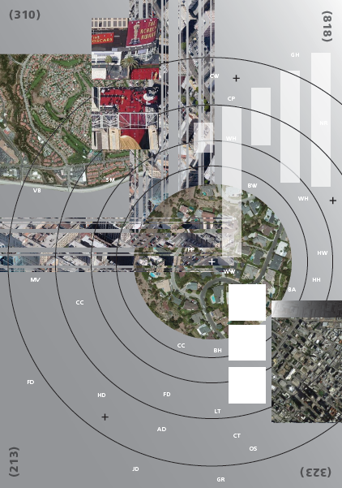
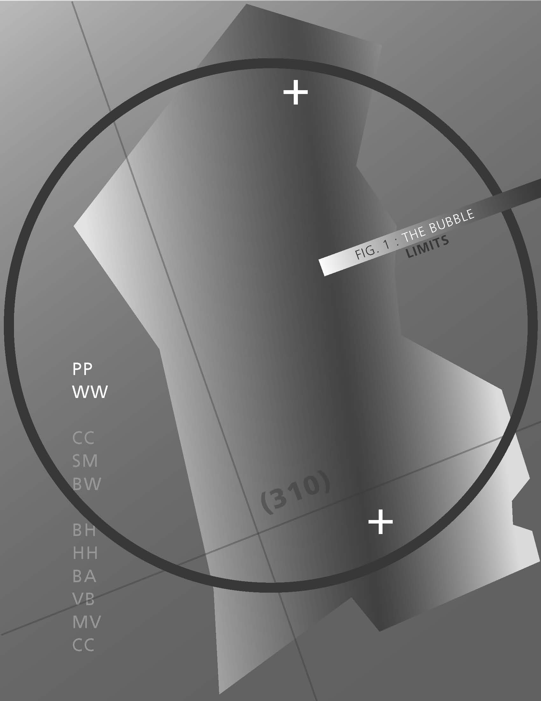
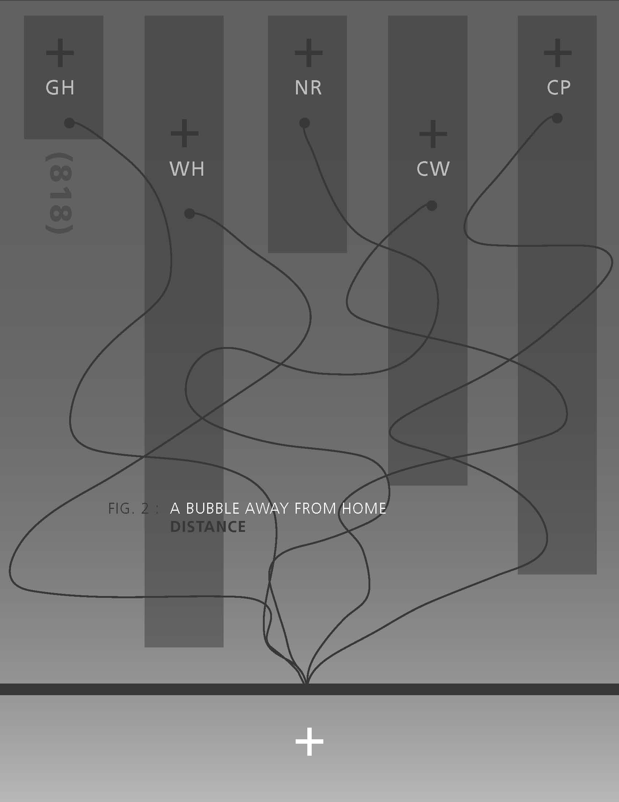
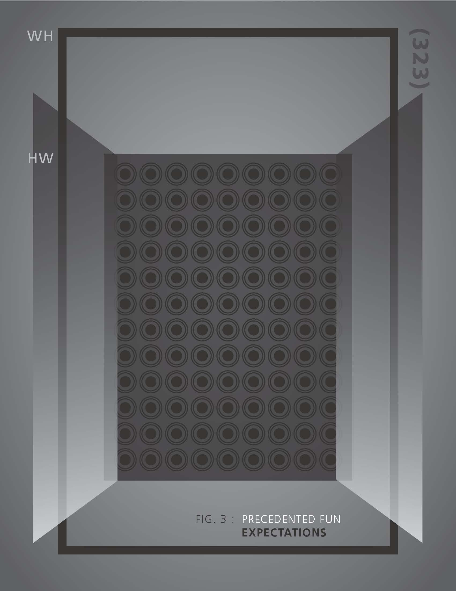
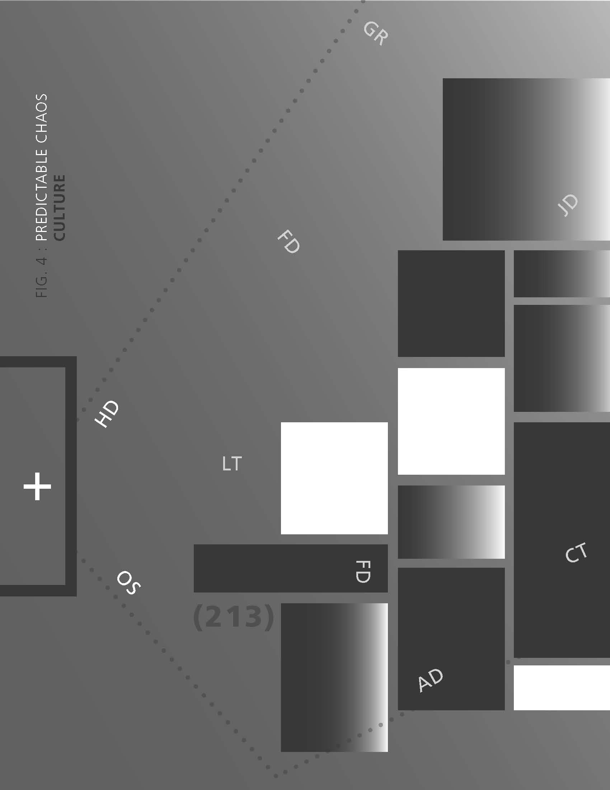
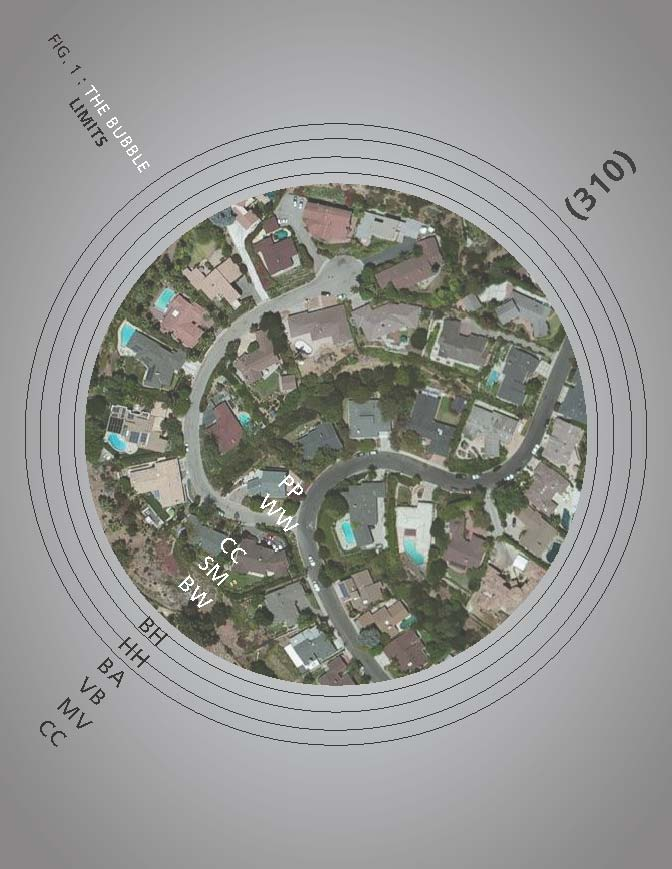
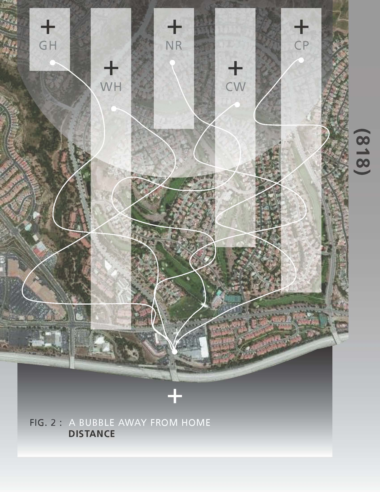
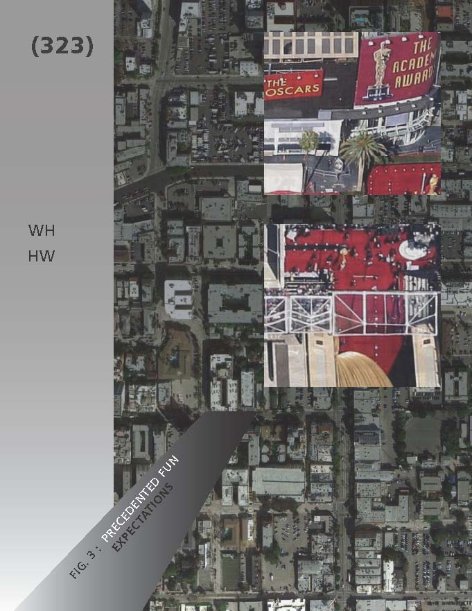
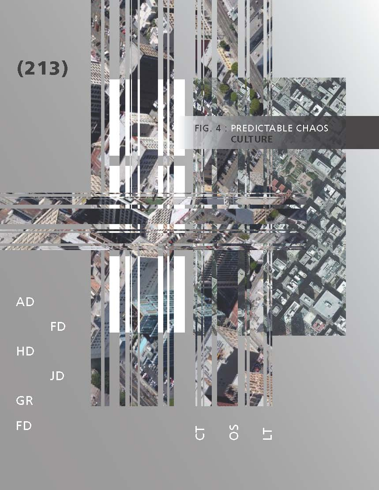

PANORAMIC LOS ANGELES









This project was conceived in light of new experiences I had that led to the rediscovery of my love for the city of Los Angeles. It is a self reflection based on locations of significance in my life. I grew up in a neighborhood that catered to the lifestyle of the rich and famous. As a young adult, I grew bored of this sheltered life style and what I refer to as my “bubble” and found other parts of Los Angeles to explore.
Each piece is designed in a factual manner, juxtaposing the highly subjective content. It is made up of a combination of factual information about the location, and personal associations. All imagery used is from Google Satellite, an objective source to show the generic point of view.
In the final poster, elements from each location are intermixed to create one harmonious piece that represents my new view of Los Angeles as a whole. The locations are no longer separated by borders and “the bubble” has expanded to reach all locations. This piece reflects how my view of Los Angeles has been recontextualized and how I can now recognize and appreciate each neighborhood’s unique qualities.